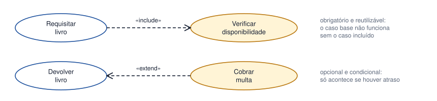
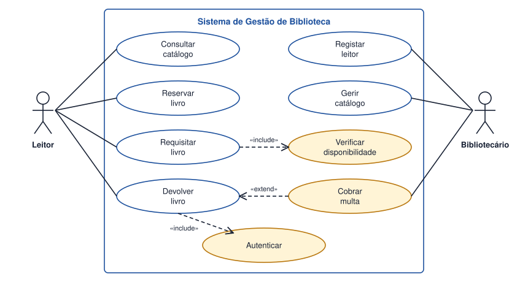

Tema 19 · UML e modelação do comportamento
Diagrama de casos de uso: relações
Relações entre casos de uso: include e extend
Quando os casos de uso se tornam muitos, convém organizá-los. Além da associação, existem relações entre casos de uso.

| Relação | Significado | Quando usar |
|---|---|---|
| «include» | O caso base inclui sempre o comportamento do outro. | Para reutilizar um passo obrigatório e comum a vários casos (por exemplo, Autenticar). |
| «extend» | O caso de extensão acrescenta, em certas condições, comportamento ao caso base. | Para comportamento opcional ou condicional (Cobrar multa, só se houver atraso). |
| Generalização | Um ator ou caso é uma especialização de outro. | Quando um papel herda tudo o que outro faz e acrescenta algo. |
Como distinguir include de extend
- A seta do include vai do caso base para o incluído; a do extend vai da extensão para o caso base.
- No include, o caso base fica incompleto sem o incluído. No extend, o caso base faz sentido sozinho.
- Se a pergunta for «isto acontece sempre?», a resposta «sim» sugere include; «só às vezes» sugere extend.
Não abuse destas relações: um diagrama com demasiados «include» e «extend» fica difícil de ler. Use-os quando evitam repetição ou clarificam condições.
Atividade
Construir um diagrama de casos de uso completo utilizando include e extend quando adequado
Construa o diagrama de casos de uso completo do sistema da biblioteca. Deve incluir:
- Os atores Leitor e Bibliotecário.
- Pelo menos uma relação include e uma relação extend, justificando a escolha.
- A fronteira do sistema.
Ver proposta de resolução

- «include»: Requisitar livro inclui Verificar disponibilidade, porque não é possível requisitar sem confirmar se há exemplar livre — acontece sempre. Autenticar é igualmente incluído pelos casos de uso que exigem identificação.
- «extend»: Cobrar multa estende Devolver livro, mas só quando a devolução é feita depois do prazo; a devolução é válida sem multa.
Em resumo
- «include» liga um caso ao comportamento obrigatório que reutiliza.
- «extend» acrescenta comportamento opcional ou condicional a um caso base.
- A seta do include aponta para o caso incluído; a do extend, para o caso base.